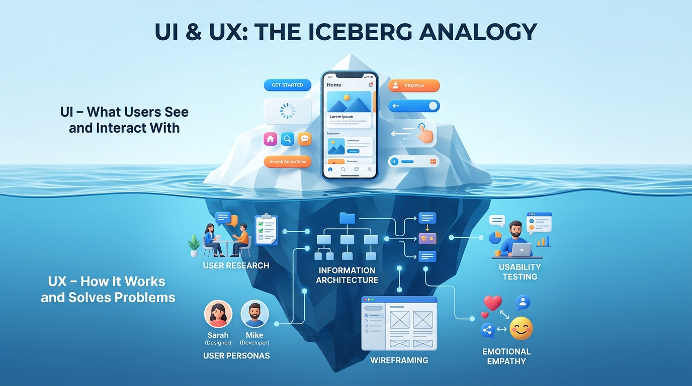

In modern technology, few terms are discussed as frequently—and misunderstood as often—as UI (User Interface) and UX (User Experience). While many modern teams seek "UI/UX Designers" as a unified role, they represent two fundamentally different, mutually dependent disciplines of problem solving.
UX (User Experience) is the internal architecture, mental psychology, and friction-free journey of how someone interacts with a product to solve a real need.
UI (User Interface) is the sensory presentation—the typography, color systems, buttons, micro-animations, and visual hierarchy—through which that journey takes tangible form.
To understand why users fall in love with digital products, consider The Iceberg Analogy. What users see when launching an application is merely the 15% visible tip above the waterline: polished buttons, typography, responsive cards, and bouncy micro-interactions.
